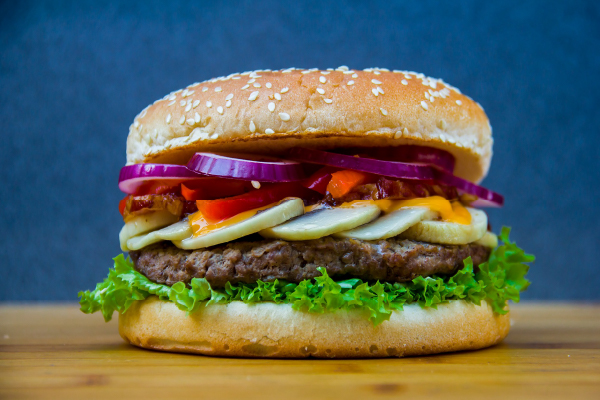
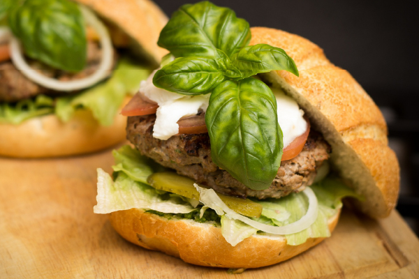
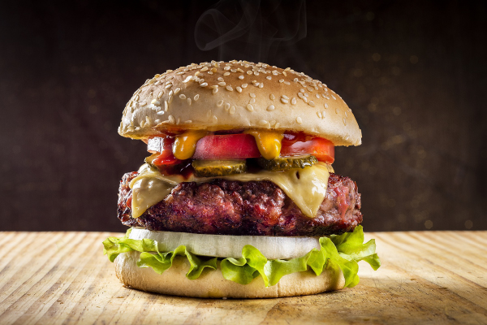

MENU

ベジタブルエッグバーガー
シャキシャキの紫玉ねぎとゆで卵がたっぷり入ったヘルシーなAWAJI BURGERの定番バーガーです。 淡路牛100％のパティーと一緒にお楽しみください。
600円

バジルチーズバーガー
採れたてのバジルとカマンベールチーズのさわやかなハーモニーが絶妙な、変わり種バーガー。 レタスやピクルスも通常バーガーの２倍量が入っていて食べ応えも充分です。淡路牛100％のパティーと一緒にお楽しみください。
600円

淡路牛200％バーガー
当店自慢の淡路牛パティーを通常バーガーの倍のサイズでご用意いたしました。新鮮なトマトの酸味とこってりしたチーズソースとの相性は抜群。ぜひ一度ご賞味ください。
830円